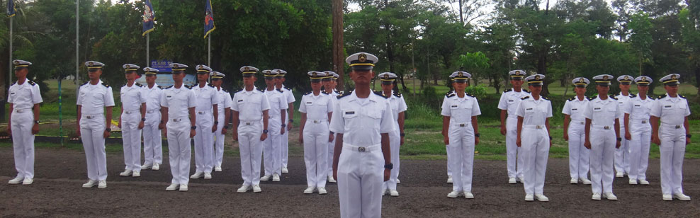
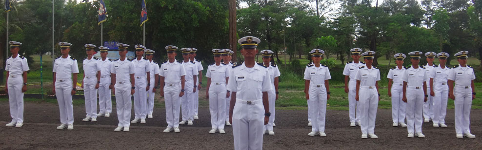
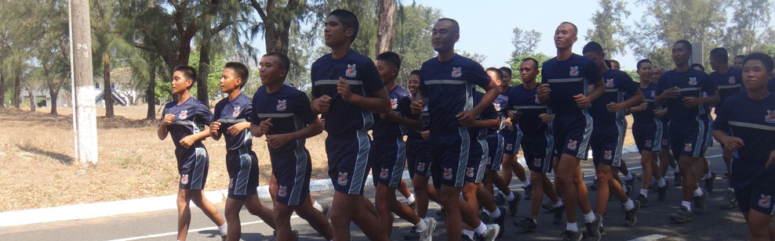
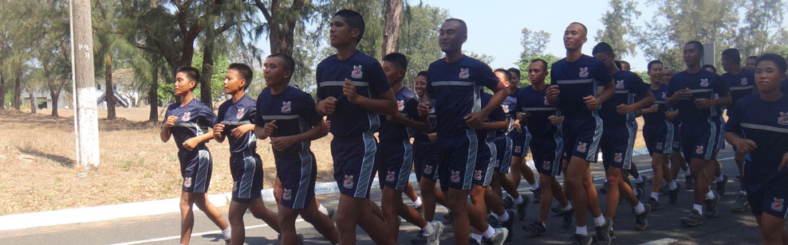

 

Welcome to PNOCS
Current UpdatesNOCC Mandarangan Class 26 processing commissionship. The NOCC "Mandarangan" Class 26 has its on going process for commissionship at Cavite Naval Hospital... NOCC Sinag-tala Class 27 to be recognized this August 2015. Come 13th and 14th of August 2015 is the Pre-recognition and Recognition Rites of... |
Philippine Navy Officer Candidate SchoolNaval Officer Candidate Course (NOCC) CurriculumNOCC’s curriculum is a combination of classroom-based instruction and on-the-job training that acquaints and exposes students into the principles of leadership, rudiments of military life, and basic knowledge on naval customs and traditions. The curriculum also aims to develop their physical abilities, acquire basic soldiery skills, develop leadership and management skills, demonstrate effective oral and written communication skills, demonstrate competencies as Watch Officer, both OOD and OOW, as prescribed in the PN Minimum Military and Professional Requirements Booklet, demonstrate competency in the minimum military requirement of the PNMMPRB, perform basic computer operation, develop leadership and management skills, identify and demonstrate the role of the sailor in the expanded mission of the PN in national development, environmental protection, disaster response operation, and peacekeeping operation and acquire basic knowledge on modern naval warfare. The Naval Officer Candidates live by Excellence – A leader is driven by excellence, in such a way it is the capacity to establish direction and to influence and align others towards common goal. Excellence means greatness and the quality of being outstanding or extremely good. Professionalism – the competence or skill expected of a professional – it describes the standards of education and training that prepare members with the particular knowledge and skills necessary to perform the role of profession. Duty – a responsibility, a moral or legal obligation that conveys a sense of moral commitment or obligation to someone or something. The moral commitment should result in action and one’s own moral expectation for oneself. The Curriculum of the Naval Officer Candidate School is subdivided into three Areas: Academic phase where officer candidates learn to balance the academic loads with their duties in the Officer Candidate Battalion. Non-academic phase commences with the basic military training in bootcamp that last for four months. Lastly, the Administrative activities which includes Instructional Program Visit (IPV) which exposes the NOCC students to the different academies and its academic program and the different cadet’s various activities. NOCC students also get the chance to meet with other officer candidates from the Army and Air Force through their respective IPV’s. |